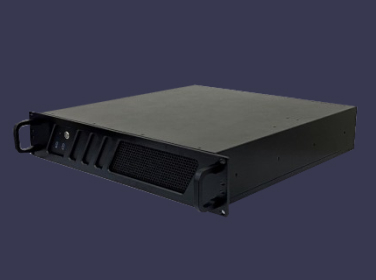

사업 영역
BUSINESS
NVR
NVR(DIVIPLUS)
-
SI DV-P 24Bay Series
PC base NVR Linux Embedded 기반 Display Full-HD(1920x1080p) Recording Full-HD(1920x1080p) 24Bay type 4U Case LINE-UP: 4, 9, 16, 25, 36, 49, 64CH~256CH
-
SI DV-P 16Bay Series
PC base NVR Linux Embedded 기반 Display Full-HD(1920x1080p) Recording Full-HD(1920x1080p) 16Bay type 3U Case LINE-UP: 4, 9, 16, 25, 36, 49, 64CH~256CH
-
SI DV-P 8Bay Series
PC base NVR Linux Embedded 기반 Display Full-HD(1920x1080p) Recording Full-HD(1920x1080p) 8Bay type 2U Case LINE-UP: 4, 9, 16, 25, 36, 49, 64CH~256CH
-
SI DV-P Series
PC base NVR Linux Embedded 기반 Display Full-HD(1920x1080p) Recording Full-HD(1920x1080p) New type 4U Case LINE-UP: 4, 9, 16, 25, 36, 49, 64CH~256CH
-
SI DV-PF Series
PC base NVR Linux Embedded 기반 Display Full-HD(1920x1080p) Recording Full-HD(1920x1080p) New type 2U Case LINE-UP: 4, 9, 16, 25, 36, 49, 64CH~256CH
Display
-
SI DV-VIEW
· 디스플레이만을 위한 최적의 구성
· Linux 64bit OS
· ONVIF / RTSP 표준 프로토콜 (ONVIF Profile S)
· 뷰셋 기능 지원 (라이브 즐겨찾기 지원) -
SI DV-WALL
· 자유로운 화면 구성
· 모니터별 최대 64ch 디스플레이
· 화면배치 저장 및 이벤트 팝업
· 네트워크 구성으로 단순화
지능형 영상분석 서버
-
SI 지능형 영상분석
문자인식, 물체감지, 화재감지, 침입감지, 통과감지, 안면인식, 유기감지, 안전모 미착용 및 쓰러짐 감지 기능이 포함된 ai 지능형 영상분석 솔루션 입니다.
-
SI DV-AI PLUS-100
기존 DIVIPLUS NVR의 영상분석보다 인식률 및 감지율을 높여 한국인터넷진흥원(KISA) 평가인증을 획득한 고급형 AI영상분석 서버입니다.
-

SI DV-VPS-P
기존 DIVIPLUS NVR의 영상분석보다 인식률 및 감지율을 높여 한국인터넷진흥원(KISA) 평가인증을 획득한 고급형 AI영상분석 서버입니다.
ETC
-
 SI DV-P00P Series
파나소닉, Axis, 한화테크윈 프로토콜 전용 PC base 2U NVR
-
SI DIVIPLUS VMS BOX
DIVIPLUS Series 통합관제용 원격 접속/제어 소프트웨어
-

SI DV-VPS-P
DIVIPLUS Series 통합관제용 원격 접속/제어 소프트웨어
-
SI DV-NTP-G
· GPS를 이용한 시간동기화 서버
· 1대의 카메라 또는 단독형으로 전체 시스템 시간동기화 가능 -
SI DV-EMC(B)
· POE(Power Over Ethernet) 지원
· Poe Repeater 기능
· Bleutooth Remote 기능
· 경고음 출력기능
· 알럄 출력
· Button LED -
SI NAC 2000
· Poe AMP / Poe Repeater
· 15W 고출력 앰프 탑제
· 낙뢰 서지 보호기능 내장
· IP Camera 전원공급